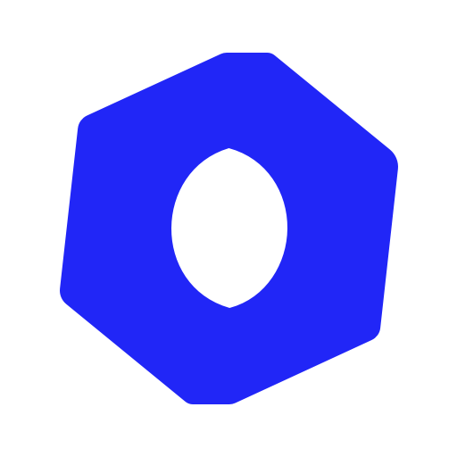
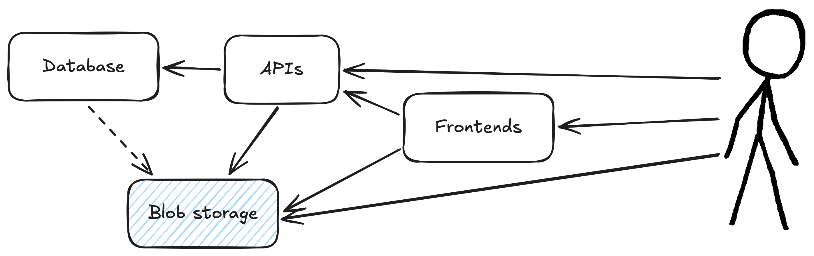
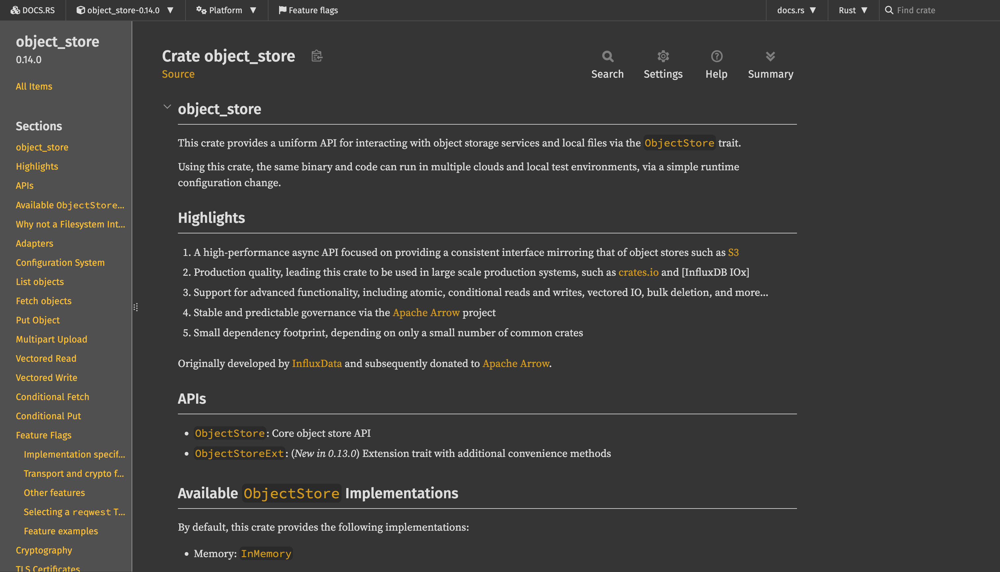
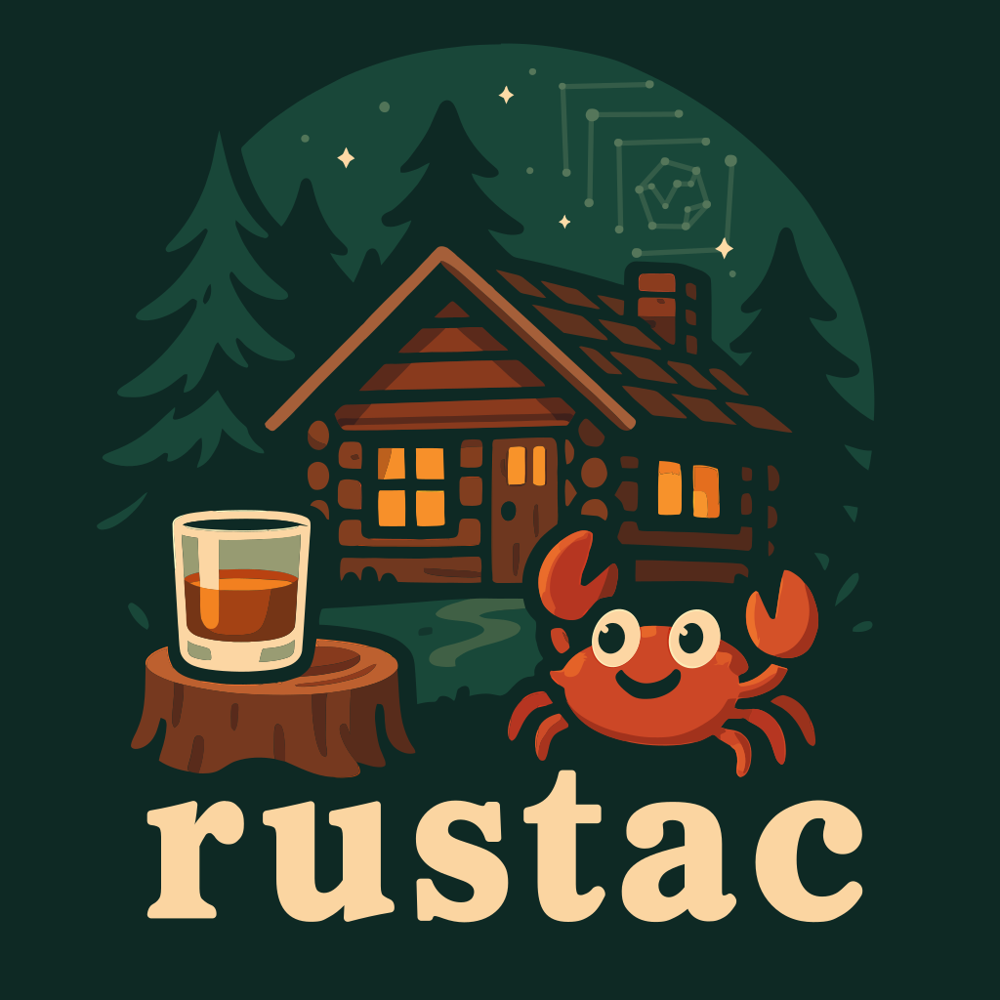
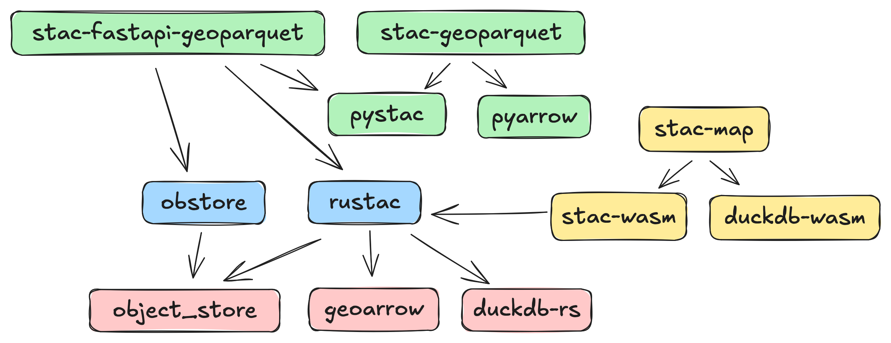

High-performance Cloud-Native Geospatial Python packages using Rust
CNG 🐍 🤝 🦀
Pete Gadomski, Development Seed
Cloud-Native Geospatial (CNG)

CNG architecture

CNG data formats
- Cloud Optimized GeoTIFF (COG)
- Zarr
- Cloud Optimized Point Clouds (COPC)
- GeoParquet
- FlatGeobuf
- PMTiles
CNG metadata formats
Used for search and discovery, can be leveraged for analytics
- SpatioTemporal Asset Catalog (STAC)
- Zarr (sort of)
STAC

stac-map

CNG software
- Python is lingua franca for data analysis and processing
- R is used for analysis, less for processing
- Often I/O bound, but not always
- GDAL is the foundation for most (but not all)
Powering up CNG software with Rust
- pyo3 has made Python+Rust pretty easy
- WASM can allow code re-use to the browser
- Sometimes a command-line interface (CLI) is all you need
obstore
from obstore.store import S3Store, from_url
from_url("s3://bucket-name", region="us-east-1", skip_signature=True)
from_url("https://bucket-name.s3.us-east-1.amazonaws.com", skip_signature=True)
store = S3Store("bucket-name", region="us-east-1", skip_signature=True)
- AWS S3
- Google Cloud Storage
- Microsoft Azure
- HTTP
- Local
- Memory
Built directly on object_store

Exposes an almost-identical API
Why?
- No Python dependencies
- async
- When making many small requests, can be up to 9x faster throughput than fsspec
- Releases Global Interpreter Lock (GIL) for sync operations
rustac

https://stac-utils.github.io/rustac-py/
https://stac-utils.github.io/rustac/
rustac (CLI)
# Search
$ rustac search https://landsatlook.usgs.gov/stac-server \
--collections landsat-c2l2-sr \
--intersects '{"type": "Point", "coordinates": [-105.119, 40.173]}' \
--sortby='-properties.datetime' \
--max-items 1000 \
items.parquet
# Translate formats
$ rustac translate items.ndjson items.parquet
rustac (Python)
# Search a STAC API
items = await rustac.search(
"https://landsatlook.usgs.gov/stac-server",
collections="landsat-c2l2-sr",
intersects={"type": "Point", "coordinates": [-105.119, 40.173]},
max_items=100,
)
from geopandas import GeoDataFrame
table = rustac.to_arrow(items)
data_frame = GeoDataFrame.from_arrow(table)
items = rustac.from_arrow(data_frame.to_arrow())
await rustac.write("/tmp/items.parquet", items)
Ecosystem architecture

What's next? 👷♀️
- async-tiff and async-geotiff: same pattern and no GDAL
- zarrista: same pattern for Zarr (again, no GDAL)
- Rust isn't right for everything, e.g. sometimes pure Typescript can be best
Fin
CNG 🐍 🤝 🦀
Thanks for your time!